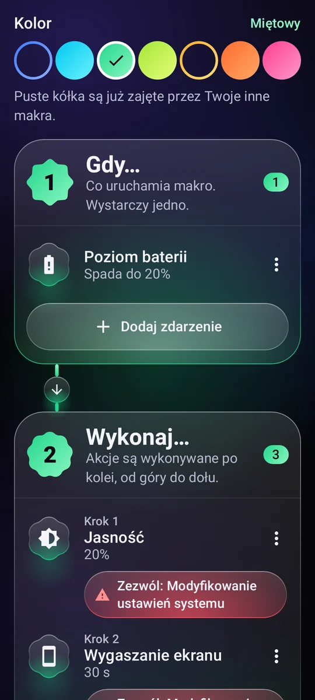
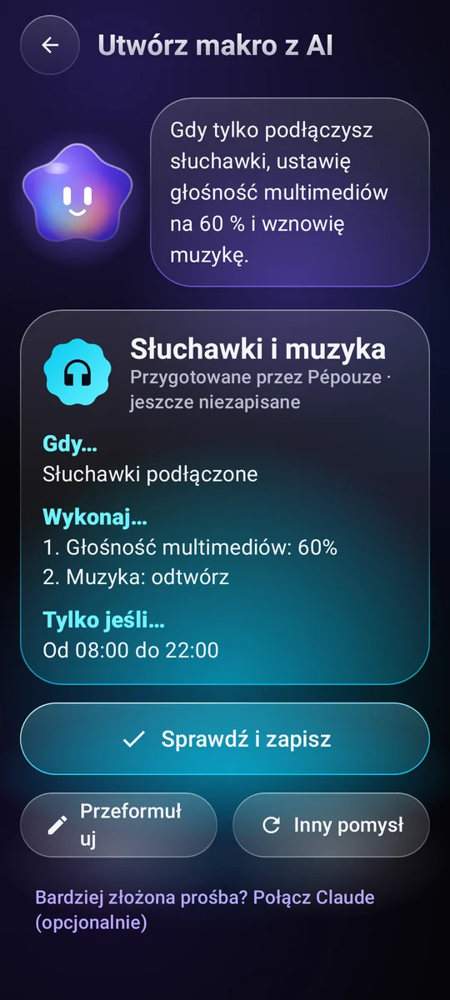
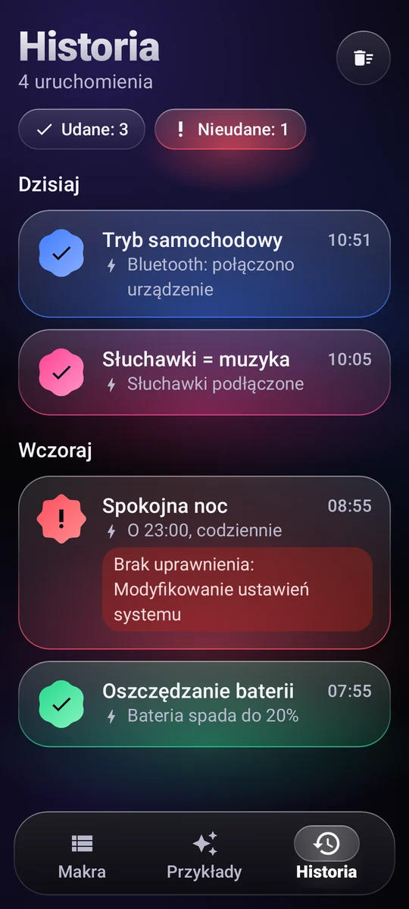

Co uruchamia makro
Godzina i dni tygodnia, Wi-Fi, Bluetooth, słuchawki, ładowarka, poziom baterii, włączenie ekranu, otwarcie aplikacji…
11 wyzwalaczyAutomatyzacja na Androida
Napisz prostą regułę „Gdy… Zrób…”, a telefon sam zajmie się resztą we właściwym momencie.
Jak to działa
Każde makro mieści się w jednym zdaniu. Składasz je z trzech bloków, bez programowania.
Godzina i dni tygodnia, Wi-Fi, Bluetooth, słuchawki, ładowarka, poziom baterii, włączenie ekranu, otwarcie aplikacji…
11 wyzwalaczyGłośność, dzwonek, Nie przeszkadzać, jasność, latarka, muzyka, alarm, minutnik, powiadomienie, czytanie tekstu na głos, otwarcie aplikacji lub linku, dotknięcie tekstu na ekranie…
29 działań do łączeniaPrzedział godzin, dni tygodnia, poziom baterii, telefon podłączony do ładowania.

Przykłady
Skopiuj przykład, dopasuj go do siebie i gotowe. Oto kilka z nich.
Gdy tylko połączy się Bluetooth w samochodzie, głośność rośnie, a muzyka gra dalej.
O 23:00 włącza się Nie przeszkadzać, jasność spada do minimum, a muzyka cichnie.
Poniżej 20% baterii ekran przyciemnia się i szybciej wygasa.
Gdy podłączasz słuchawki, muzyka startuje na niskiej głośności.
Rano, po odłączeniu ładowarki, telefon podaje ci godzinę i stan baterii.
Od niedzieli do czwartku o 22:30 łagodne przypomnienie, by odłożyć telefon, a ekran się przyciemnia.

Pépouze, twoja asystentka
Opisz w jednym zdaniu, czego chcesz. Pépouze przygotuje makro, ty je sprawdzisz i zapiszesz.
Ty„Gdy podłączę słuchawki, ustaw muzykę na 60%”
Udostępniaj i uruchamiaj
Wymieniaj się pomysłami ze społecznością i uruchamiaj makra bez otwierania aplikacji.
Biblioteka makr udostępnionych przez użytkowników. Skopiuj to, które ci się podoba, opublikuj własne. Zobacz społeczność
Pokaż go znajomemu, wstaw do filmu: otworzy go każdy aparat, a Pépouze go zaimportuje.
Widżet na ekranie głównym, kafelek w szybkich ustawieniach albo skrót: makro uruchamia się od razu.
Pépouze mówi w 13 językach i rozumie twoje prośby bezpośrednio na telefonie.
Ty masz kontrolę
Każde uruchomienie jest zapisywane, udane czy nie, razem z tym, co je wywołało.
O uprawnienie prosimy dopiero wtedy, gdy potrzebuje go makro, i zawsze wyjaśniamy po co.
Na Dysku Google lub w telefonie, bez konta. Albo w chmurze, z kontem.
Twoje makra są w twoim telefonie. Bez pomiaru ruchu, bez sprzedawania danych.

Cena
Bez reklam, bez subskrypcji, bez haczyków: Pépouze to niezależny projekt.
0 €
Pytania
Tylko do tego, co dodajesz do swoich makr: dotknięcia tekstu na ekranie, naciśnięcia przycisku Wstecz lub Ekran główny, zablokowania ekranu, zrobienia zrzutu ekranu, sprawdzenia, jaka aplikacja się otwiera.
Tekst na ekranie jest odczytywany tylko po to, by znaleźć ten do dotknięcia, i nic nie opuszcza telefonu. Pépouze działa wyłącznie według twoich reguł. Usługa włącza się tylko za twoją zgodą, po osobnym wyjaśnieniu, i możesz ją wyłączyć w każdej chwili.
Nie. Konto służy tylko do kopii zapasowej makr w chmurze. Możesz też zapisać je w pliku, na Dysku Google lub w telefonie, bez żadnego konta.
Tak, większość z nich: Pépouze nasłuchuje zdarzeń w tle. Żeby Android jej nie usypiał, wybierz „Bateria: bez ograniczeń” na stronie aplikacji w ustawieniach Androida. Działania, które dotykają ekranu, wymagają odblokowanego telefonu.
Nie. Działanie „Przygotuj SMS” otwiera aplikację do wiadomości z gotowym numerem i tekstem: to ty dotykasz Wyślij.
W aplikacji: Moje konto → Usuń moje konto. Bez aplikacji przejdź na stronę usuwania konta.
Za darmo na Androida, bez reklam.
Pépouze już wkrótce. Wypróbuj ją przed innymi: napisz do nas, a wyślemy zaproszenie.